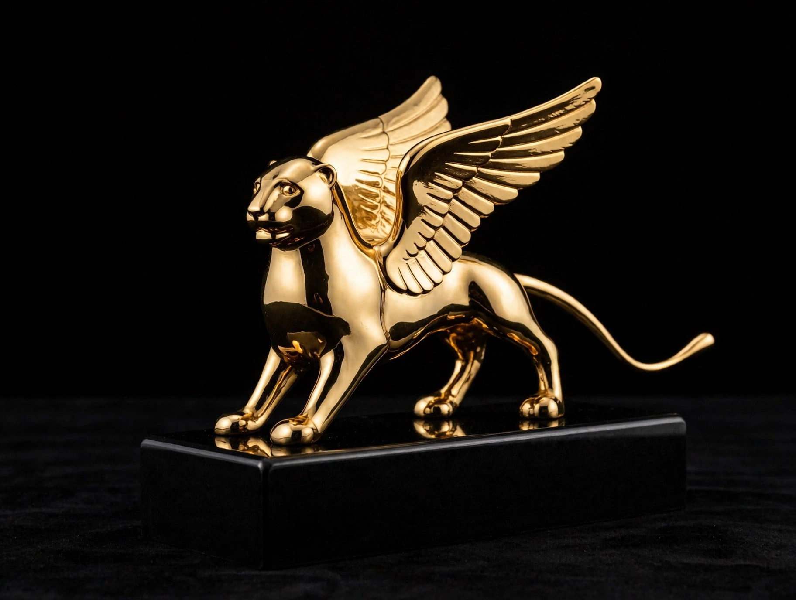

From Wikipedia, the free encyclopedia
| Golden Lion | |
|---|---|
| Italian | Leone d'oro |
| Awarded for | Best film in competition at the Venice Film Festival |
| Presented by | Venice International Film Festival |
| First awarded | 1949 (as the Golden Lion of St. Mark) |
| Symbol | Lion of Saint Mark, emblem of Venice |

The Golden Lion (Leone d'oro), the highest prize of the Venice Film Festival.
The Golden Lion (Italian: Leone d'oro) is the highest prize given to a film at the Venice International Film Festival, awarded by the festival's international jury to the best film in the official competition. The prize takes its name and form from the winged Lion of Saint Mark, the symbol of the city of Venice and of the former Venetian Republic. Together with the Palme d'Or at Cannes and the Golden Bear at Berlin, it is considered one of the three most prestigious awards in world cinema, and winning it can transform the international fortunes of a film and its director.
The Venice Film Festival, founded in 1932 as part of the Venice Biennale, is the world's oldest film festival. In its earliest editions the main award was the Coppa Mussolini, named for the Italian dictator; during and after the Fascist period the top prizes went through several names, including the International Prize. In 1949 the principal award was renamed the Golden Lion of St. Mark, won that year by Henri-Georges Clouzot's Manon; from 1954 the prize was shortened to the Golden Lion. No awards were given in 1969–1979, when the festival became non-competitive in the aftermath of the political upheavals of 1968, before competition was restored in 1980.
The first decades of the prize honoured many landmarks of post-war cinema: Akira Kurosawa's Rashomon (1951), which introduced Japanese cinema to the West; Satyajit Ray's Aparajito (1957); Alain Resnais's Last Year at Marienbad (1961); Michelangelo Antonioni's Red Desert (1964); and Luis Buñuel's Belle de Jour (1967). Later winners include Louis Malle's Atlantic City (1980, shared) and Au revoir les enfants (1987), Wim Wenders's The State of Things (1982), Ang Lee's Brokeback Mountain (2005) and Lust, Caution (2007), Sofia Coppola's Somewhere (2010), Guillermo del Toro's The Shape of Water (2017) — which went on to win the Academy Award for Best Picture — Todd Phillips's Joker (2019), Audrey Diwan's Happening (2021) and Pedro Almodóvar's The Room Next Door (2024). Directors such as Ang Lee, Zhang Yimou, Milos Forman and Louis Malle have won the prize twice.
The trophy depicts the winged lion of Saint Mark in gold. Alongside the Golden Lion for best film, the festival awards the Silver Lion (Grand Jury Prize and Best Director), the Volpi Cups for acting, and the Golden Lion for Lifetime Achievement, instituted in 1971 to honour lifetime contributions to cinema; separate sections such as Orizzonti (Horizons) have their own prizes, including a Golden Lion for best film in some earlier editions' parallel categories.